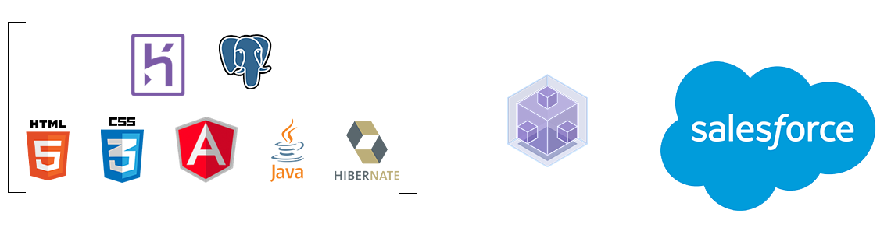

Architecture
Overview of SPLASH architecture
In SPLASH you have a chain of tools that manage data between a web application and Salesforce.
Web technologies
In the web application the most modern web technologies are used: AngularJS, HTML 5 and CSS 3.
-
HTML 5

State-of-the-Art Web Standard. Look & Feel thanks to modern Web-Standards also usable for mobile end devices.
CSS 3

Style sheet language. Used for describing the presentation of a document written in a markup language.
Angular JS

AngularJS lets you easily extend HTML vocabulary. The resulting environment is extraordinarily expressive, readable, and quick to develop.
-
Backend technologies
In the backend the application deployed in Heroku is written in Java with the frameworks Spring and Hibernate, data are saved in a Postgresql database and are synchronized with Salesforce through the Heroku plugin "Heroku Connect".
Spring & Hibernate

Heroku is a platform where you can deploy web server applications. For SPLASH the Tomcat server was used.
The application was developed in Java by using the Spring Framework and the access to the database is done through Hibernate.Database

The database used to store the data in Heroku is Postgresql. Postgresql is an open-source object-relational database management system.
Heroku creates a database instance by adding the corresponding Heroku plugin for the Postgresql database. Connection information and credentials are also provided automatically in Heroku.
Heroku uses Amazon AWS in the background to store the database contents.Heroku Connect

Heroku Connect is a plugin that enables automatic synchronization through your Salesforce Org and the Postgresql database in Heroku.
You can define connection information for the plugin through the Heroku web pages.
Heroku Connects actually creates a separate database schema in the Postgresql database and let's you define which columns of the Salesforce objects you want to transmit in the Postgresql database. You can also define if the data transmission is unidirectional or bidirectional.Salesforce

Salesforce is globally the leading CRM (Customer Relationship Management) cloud platform.
In the SPLASH concept Salesforce has the role of the business system that manages account information.
To sum up the general concept of the applications's architecture is that you have your business data stored in your Salesforce Org.
Heroku Connect enables you to transmit the Salesforce data you choose to be transmitted automatically to a relational database (Postgresql) in the Heroku cloud platform.
Data are mapped to Java objects through the Hibernate framework and Spring exposes them as REST services to the web.
The frontend web application provides a user-friendly web interface for the user to access Salesforce data exposed through the REST services.